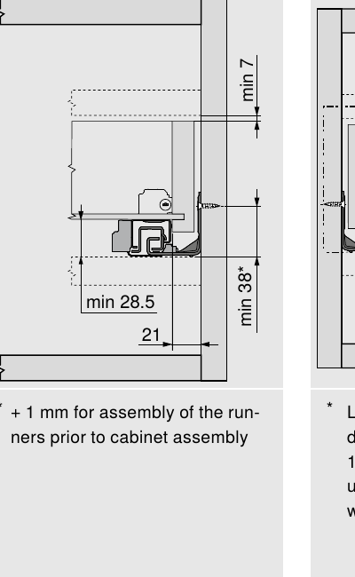
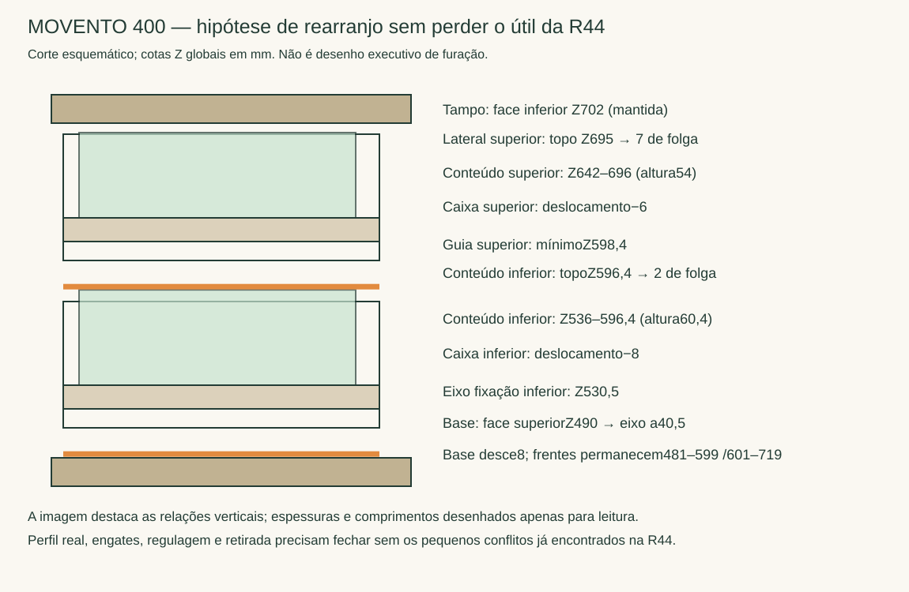

Alternativa dimensional à FGVTN, estudo adicional para R45. A caixa existente já foi dimensionada originalmente para MOVENTO. O comprimento400 pode ser mantido; não há motivo dimensional para reduzir a350.
Recomendação de continuidade: manter MOVENTO400 nas duas gavetas do escritório. Profundidade e largura da R44 correspondem ao fabricante. Ainda não é montagem liberada: o exame geométrico encontrou pequenas interseções fundo/perfis e a reserva superior de retirada precisa correção. Foi preparada uma hipótese vertical que preserva o útil da R44, descrita abaixo, sem alterar o documento original.
Dois pares de 760H4000S, MOVENTO com BLUMOTION S, classe40kg; dois engates esquerdos e dois direitos T51.7601; fixação por parafusos do sistema conforme desenho de cada guia; gabarito T65.1000.02 para engates/ganchos. Não inclui TIP-ON, estabilizador lateral nem ajuste de profundidade para frente embutida: as frentes aqui são aplicadas. O kit comercial deve discriminar ambos os engates por par. Códigos oficiais identificam as peças, não comprovam estoque/preço local.
O manual apresenta para guias parafusos 609.1500 (Ø3,5×15) ou de sistema661.1450.HG (Ø6×14,5), em posições indicadas na folha26. Não são dois métodos para somar no mesmo furo. O desenho deve ser conferido na revisão do produto comprado, inclusive a opção de substituição indicada por asterisco. Na lateral18, um parafuso de comprimento15 deixa pelo menos3 de pele geométrica se toda a haste penetrasse madeira; a espessura do perfil aumenta a sobra. Isso não avalia arrancamento ou piloto.
| Opção | Gabinete mínimo / existente | Caixa e útil longitudinal | Decisão |
|---|---|---|---|
| MOVENTO400 | 403 /412 → +9 | Caixa390; útil359 com dianteira16+traseira15 | Compatível com comprimento atual R44 |
| MOVENTO350 | 353 /412 | Caixa340; útil309 | Rejeitar: perde50 úteis |
| FGVTN400 | 420 /412 → −8 | Caixa400; caixa/engate precisam adaptar | Exige profundidade maior, além do fechamento dos engates |
| FGVTN350 | 370 /412 | Caixa350; útil319 com paredes equivalentes | Rejeitar: perde40 úteis |
MOVENTO: largura interna364−42=322; laterais15 dão352 externos. A tolerância documental interna é322 a320,5. A largura útil R44 de322 e profundidade359 são preservadas; a melhoria da variante FGVTN R04 (323×364) não é prometida por esta alternativa. O objetivo é preservar o programa existente, sem trocar redução de gaveta por facilidade de montagem.
Face frontal da carcaçaY680; interna do fundoY268; comprimento livre412. Na guia esquerda inferior, círculos dos furos da aba de fixação emX4318,3/4319,2 têm centrosZ538,5. Base internaZ498: eixo a40,5, atendendo mínimo38. A cota38 não é distância da face inferior do fundo à base. O recorte ampliado abaixo mostra sua referência no eixo do parafuso. A mínima28,5 é da face inferior do fundo ao envelope inferior da guia; na pose atual são529−500,4=28,6.

Ensaio fechado de perfis/engates reais existentes contra seis madeiras de cada gaveta: quatro conflitos,52,130 e54,032mm³ por par, repetidos nas duas gavetas. A maior parte é penetração vertical de0,125–0,175 na face inferior do fundo. Na direita há ainda1,902mm³ no gancho traseiro. Os engates não apresentaram interseções acima0,1mm³ com a própria caixa nesse ensaio. Isso identifica pequenos problemas de datum/recorte no modelo legado, não incompatibilidade geral do sistema.
Teste diagnóstico abaixando somente perfil0,175: a esquerda zera; direita mantém1,896mm³. Abaixar0,5 mantém2,050mm³ à direita;1mm cria1,111mm³ também à esquerda. Portanto, não basta baixar a guia por tentativa. As caixas já possuem furos traseirosØ6×10 com referências7/11, mas o detalhe precisa ser construído pelo gabarito oficial sobre a montagem definitiva. Nenhum recorte adicional foi executado para apagar a interferência.
A caixa superior atual terminaZ701 e tampo começaZ702:1 de folga, frente ao mínimo7 do desenho. Como alternativa de estudo, reaproveitar a base8 abaixo da varianteR04, mantendo profundidade original: base internaZ490, caixa inferior−8 e superior−6, frentes fixas. Assim, lateral superior terminaZ695 (7 até tampo); conteúdo inferior fica536–596,4 e guia superior começa598,4 (2 de margem nominal). O eixo inferior passa530,5, ainda40,5 sobre a base. A mudança exige carcaça8 mais alta para baixo, não redução de volume de gavetas. Ainda deve ser compatibilizada com a estrutura inferior da mesa e retirada antes de qualquer integração.

Alturas preservadas de conteúdo:60,4 inferior e54 superior, largura322 e profundidade359. Volumes de referência6,982 e6,242litros. A folga2 entre conteúdo e guia superior não autoriza somar livremente regulagens para cima: é orçamento nominal a conferir com tolerâncias e posicionamento final. O ensaio de engates é fechado; acessibilidade com mãos e procedimento completo de destravamento/retirada ainda não foram certificados. Não confundir translação sem colisão com remoção concluída.
Manual oficial arquivado — páginas20 e26 inspecionadas visualmente. Planejamento · Fixação lateral · Centros de furos e geometria R04 · Interseções fechadas · Sensibilidade de altura.
Fontes oficiais: catálogo: componentes e capacidade; catálogo: dimensões e montagem; catálogo: fixação das guias; Blum Easy Assembly: fabricação da caixa e gabarito; origem do PDF arquivado. Consulta23/10/2026. Sem compra, e-mail ou alteração de R44.